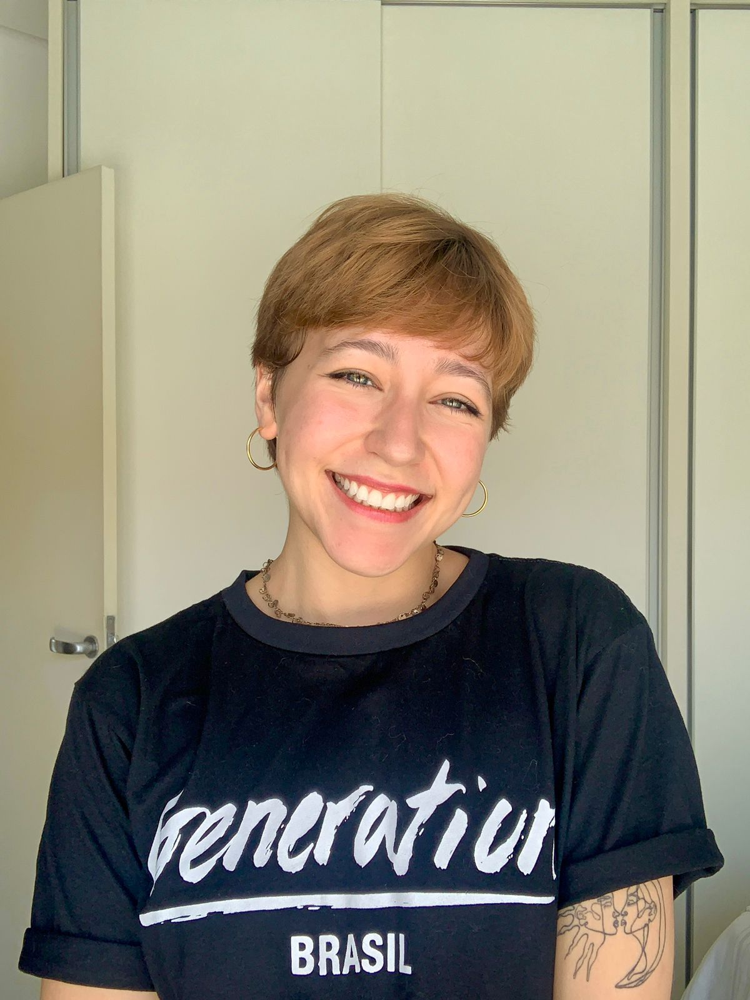

Essa sou eu:
Um dos meus hobbies é assistir filmes e principalmente musicais. CODA foi um dos últimos musicais que assisti e é simplesmente lindo. Ele foi indicado a algumas categorias do Oscar 2022 e inclusive ganhou a categoria de melhor filme.
Aqui está a cena da interpretação da protagonista da música final, que ficou maravilhosa e emocionante:
Um outro hobbie que amo é praticar esportes e principalmente o cheerleading. Um esporte em equipes onde exerço a posição de flyer e não tem explicação melhor de como funciona do que com imagens e vídeos: